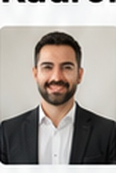
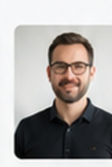

Ahmet Yılmaz
Matematik ÖğretmeniYeni nesil problem çözme, TYT–AYT matematik ve deneme stratejileri.
ORİJİN kadrosu; branş uzmanlığını, sınav deneyimini ve öğrenci takibini aynı eğitim kültüründe buluşturur.

Yeni nesil problem çözme, TYT–AYT matematik ve deneme stratejileri.
Paragraf, dil bilgisi, anlam becerileri ve sınav okuma stratejileri.

Kavram temelli öğrenme, soru analizi ve AYT fizik problem yaklaşımı.

Çalışma planı, hedef yönetimi, motivasyon ve sınav süreci takibi.
Öğrencinin dersteki ve soru çözümündeki güçlü/zayıf yönleri paylaşılır.
Haftalık görevlerin uygulanabilirliği ve çalışma düzeni değerlendirilir.
Konu eksiği, etüt ihtiyacı ve deneme performansı aynı plan içinde buluşur.
9. sınıftan mezun grubuna kadar YKS yolculuğunu; doğru program, akşam kampları, etütler ve düzenli rehberlikle birlikte planlayalım.
Program, seviye ve çalışma düzeni için kısa bir tanışma görüşmesi planlayın.
Görüşme planla